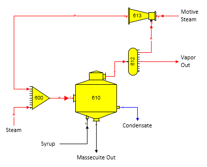
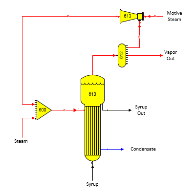

A thermocompressor station recompressing pan vapor is shown below. Suction vapor into the thermocompressor (station no. 613) is a required flow (small ‘R’ in flow line); hence, suction vapor will be taken automatically from the distributor station (no. 612). Vapor flow out of the thermocompressor is a pressure feedback flow (small ‘P’ in flow line); hence, the pressure out for the thermocompressor will be set automatically by the receiver station (no. 600) using the pressure of the external steam flow into the receiver.

The next figure below shows a thermocompressor station recompressing vapors from an evaporator station. The output flow from the thermocompressor is required (see ‘R’ in flow line from station no. 613 to 600). Because the output flow from the thermocompressor is required, the motive steam into the thermocompressor is also required. Also, because the thermocompressor station specifies the pressure of the recompressed vapor, the pressure of the output flow from the receiver station (no. 600) will be the lower value of the steam pressure and recompressed vapor into the receiver.

Specifying a known quantity of steam into the receiver station and specifying percent total solids for syrup leaving the evaporator will result in Sugars calculating the quantity of motive steam into the thermocompressor.